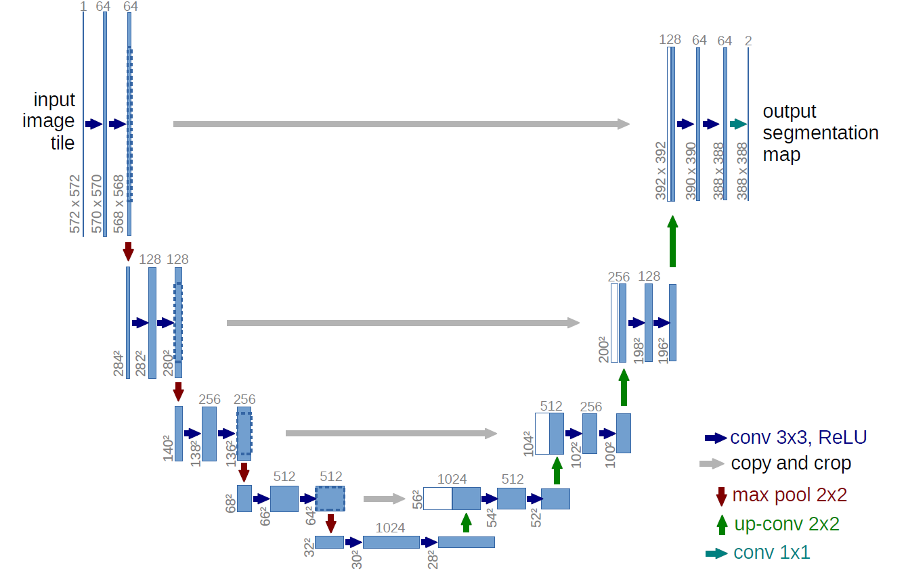

My research interest in mostly about computer vision and deep learning. In the past, I have been doing some research in image segmentation and optical flow
estimation using deep learning.
Currently, I am doing my research in the classification of dynamic textures (human crowds, herds of animals, etc.) which is closely related to my PhD subject.
Here are some details of my recent researches.
Image Segmentation
This research is about the application of deep learning in image segmentation. A model of U-Net is used.
It consists of a contraction path (left side), an expansion path (right side) and in particular, there is no fully-connected layer.
The contraction path follows the typical architecture of a convolutional network.
It consists of the repeated application of two 3 × 3 convolutions (convolutions without having zero padding),
each followed by a ReLU activation function and a 2 × 2 max pooling operation with a stride of 2 for the downsampling method.
At each downsampling step, the number of feature maps is doubled. Each step of the expansive path consists of an upsampling of the function
map followed by a 2 × 2 convolution (upconvolution) which halves the number of feature maps,
a concatenation with the corresponding function of the contracting path and two 3 × 3 convolutions,
each followed by a ReLU. Cropping is necessary due to the loss of border pixels in each convolution.
At the final layer, a 1 × 1 convolution is used to map each feature vector to 64 components to the desired number of classes.
In total, the network has 23 convolutional layers. The following figure illustrates the overall architecture of U-Net.

The program is presented in the following link
Optical Flow Estimation
To be updated
Dynamic Texture Classification
To be updated